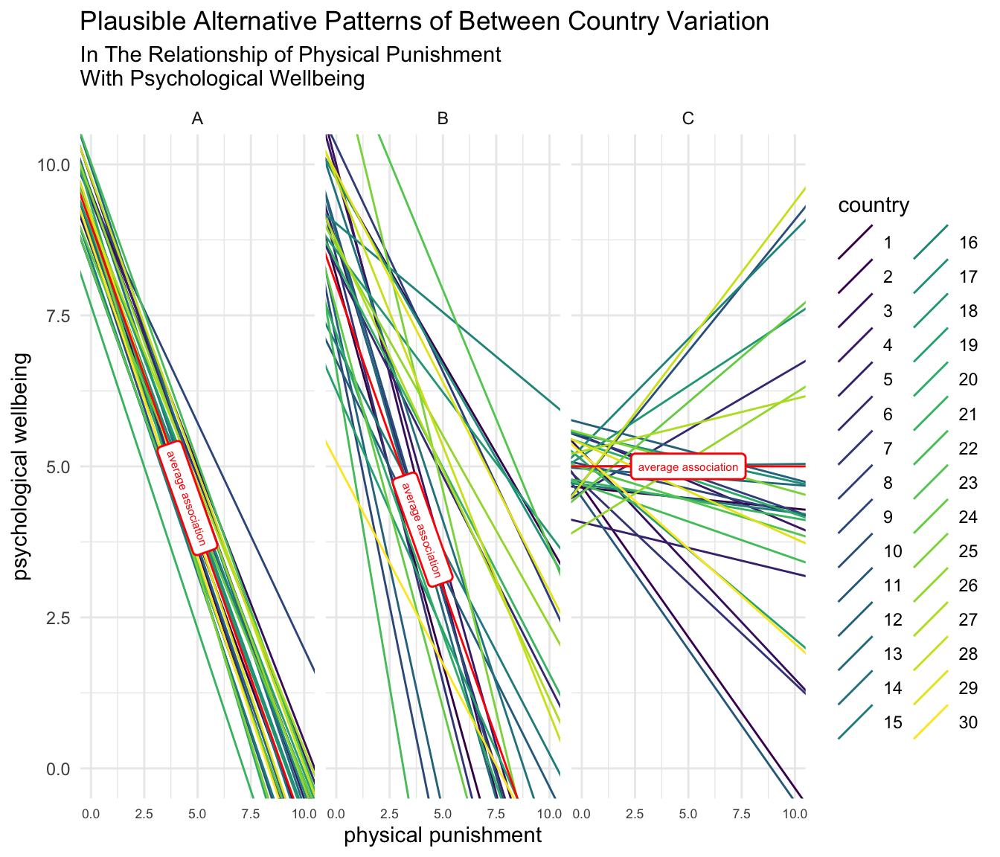
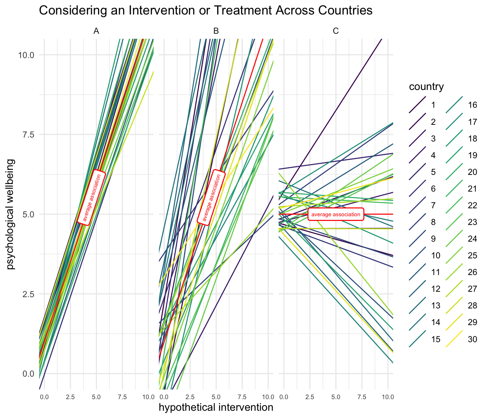

2 Introduction
2.3 Presenting Advanced Statistical Ideas
In presenting advanced, statistical concepts, one is faced with a quandary. One can present statistical concepts in the most general terms, in terms of x and y. While perhaps the mathematically most general way to present ideas, a highly general (and abstract) presentation risks not being a good way of teaching the ideas, as it is sometimes difficult to apply abstract ideas to one’s own specific area of research.
Alternatively, one can present statistical ideas in terms of specific substantive concepts. The risk of making use of a specific substantive concept is that while concrete examples are always helpful, it may be difficult for the reader to generalize from a specific example to their own area of research.
I ground this presentation in research that we have conducted on parenting and child development in international context (Grogan-Kaylor et al., 2021; Ma et al., 2022; Pace et al., 2019; Ward, Grogan-Kaylor, Ma, et al., 2021; Ward, Grogan-Kaylor, Pace, et al., 2021; Ward et al., 2022). For the presentation in this document, I use simulated data on these issues.
Using the simulated data, I refer to predictors and outcomes, and explore the ways that the multilevel model can contribute to understanding how relationships between predictors and outcomes might be similar, or might be different, across social contexts. In the examples presented below, I focus on two predictors, parental warmth, and parental use of physical punishment and focus on the outcome of improved mental health. I use the social context of different countries in our example.
It is my belief that while I use this specific set of examples, that the idea of studying families in different countries is generalizable enough to a multiplicity of diverse contexts, such that the reader can apply these ideas to their own area of interest, whether that be children in schools; residents in neighborhoods; or people in different countries.
2.4 Research on Parenting and Child Development in International Context
Research on parenting and child development has identified robust associations between parenting behaviors and child developmental outcomes. Broadly speaking, physical punishment is associated with increases in child aggression, child anxiety and child mental health problems (Gershoff & Grogan-Kaylor, 2016b), while warm and supportive parenting is associated with decreases in these outcomes (Khaleque & Rohner, 2002; Rothenberg et al., 2022). However, much of this research is conducted on North American samples (Draper et al., 2022; Henrich et al., 2010).
Barth & Olsen (2020) have argued, that children constitute a class of oppressed persons. If children are oppressed, then it is imperative to empirically determine what factors are promotive of children’s well-being, and what factors constitute risk factors that contribute to decreases in children’s well-being. Equally imperative–given the North American focus of so much research on parenting and child development (Draper et al., 2022; Henrich et al., 2010)–would be efforts to extend the study of parenting and child development to a broader, more global context. As part of such a research agenda, it is necessary to have quantitative tools that are able to determine the consistency of relationships in parenting and child development. That is, are the relationships between certain forms of parenting and child developmental outcomes, largely consistent across countries, largely different across countries, or somewhere in between?
This document will discuss the ways in which a multilevel statistical perspective not only allows one to appropriately analyze cross cultural or international data, but also the ways in which a multilevel perspective affords the opportunity for more precise quantitative thinking about cross cultural phenomena.
This document takes a very pragmatic and very advocacy oriented approach to improving research on families and children, with the aim of improving the well-being of families and children.
“It shouldn’t be theories that define the problems of our situation, but rather the problems that demand, and so to speak, select, their own theorisation.” – Martin-Baro (1998) in Burton & Kagan (2005).
Following from this pragmatic and advocacy oriented emphasis, the document is largely oriented to the doing of quantitative social research with multilevel (or multi-country) data, and is therefore mostly statistical in nature.
The document moves quickly into detailed statistical arguments. Some of these statistical discussions may seem very technical, or even overly technical. However, an overarching theme of the document is that multilevel data contains hidden complexities. A lack of awareness of the complexities of multilevel data—e.g. complexities of multi-country data—might lead to statistical analyses that point in the wrong direction: yielding false positives; false negatives; or substantively wrong conclusions.
2.5 Universalism And Particularity
The specific domain of cross-cultural research on parenting and child development raises more general questions in cross-cultural research of universalism and particularity. With regard to child development it is universal that all children need some amount of emotional and material care to grow into healthy youth and healthy adults (Kottak, 2021). Further it is broadly understood that children should be protected from violence (UNICEF, 2014). This broad consensus is manifested in such documents as the Convention on the Rights of the Child (United Nations General Assembly, 1989) and the United Nations Sustainable Development Goals (United Nations, 2022), representing global efforts to ensure the children are cared for, and are protected against violence.
At the same time, broad international efforts to improve children’s well-being must engage with important considerations of cultural uniqueness. Put simply, what is considered to be beneficial for children in one country or culture may not be considered to be beneficial in all countries or cultures. Similarly, what is considered to be detrimental in one country or culture may not equally be considered to be detrimental in all. Within the area of parenting and child development, most of the debate has focused around the question of whether physical punishment is equally detrimental in all settings, particularly whether physical punishment is detrimental in countries where it is especially common, or normative (Gershoff et al., 2010). Much less attention has been focused on the study of positive parenting internationally, and the degree to which the outcomes of positive parenting are consistent across countries remains understudied (Ward, Grogan-Kaylor, Ma, et al., 2021).
However, as global initiatives to improve child well-being and family life move forward, it becomes increasingly important to continue to collect internationally relevant data about parenting and child outcomes. If recommendations are to be made for policies, interventions, or treatments, such recommendations must be base on accurate balancing of that which is universal against that which is unique to particular cultural contexts. Thus it is necessary to employ statistical methods that are able to adequately and accurately analyze data across countries.
As I will outline below–and is evident in the literature (Kreft & de Leeuw, 1998; Luke, 2004; Rabe-Hesketh & Skrondal, 2012; Raudenbush & Bryk, 2002; Singer & Willett, 2003)–multilevel models are eminently suited for cross-cultural research in that they are not only able to control for the clustering of study participants within countries, but are also able to explore the variation–or consistency–of patterns of family life across countries.
Long ago, Cesaire, writing about liberatory movements wrote…
“My conception of the universal is that of a universal enriched by all that is particular, a universal enriched by every particular: the deepening and coexistence of all particulars.” (Cesaire, 1956)
It is this sensibility that I hope to echo in my discussion of the multilevel model below.
2.6 Multilevel Models As The Study Of Variation
“Every being cries out silently to be read differently.”
— Simone Weil, Gravity and Grace as reported in Su (2017)
Multilevel models are sometimes seen as an analytic technique that controls for the clustering or nesting of individuals inside larger social units such as schools, neighborhoods, or countries. I will describe below how this ability to control for clustering is indeed an important and crucial aspect of multilevel models.
However, my argument here is that multilevel models are better seen as a method to explore the variation in inherent within nested or clustered data. Again, while these issues are well understood within the statistical literature (Kreft & de Leeuw, 1998; Luke, 2004; Rabe-Hesketh & Skrondal, 2012; Raudenbush & Bryk, 2002; Singer & Willett, 2003), they are less often noted in applied research.
In the graph below, imagine that physical punishment, or some other risk factor, is associated with detrimental mental health outcomes. Each country in the data has its own country specific regression line.

In Panel A, there is some variation in the intercept, which is equivalent to saying that there is some variation in the average level of psychological well-being across countries. When we look at the slope of the country-specific regression lines in Panel A, we notice that there is little variation in these slopes. Put another way, there is a great amount of consistency in the slopes of the country-specific regression lines: parental use of physical punishment is consistently associated with decreases in child psychological wellbeing across countries.
In Panel B, the situation is different. There is more variation in the intercept, that is, more variation between countries in the initial or average amount of psychological well-being. There is also more variation in the slopes of the country-specific regression lines. While the average association between physical punishment and psychological well-being is very similar to that in Panel A, there is more variation across countries, in the relationship of physical punishment and child psychological wellbeing, which would likely merit exploration were one considering developing programs, policies or interventions for different countries.
Lastly, the pattern of variation in Panel C is considerably different from either Panel A or Panel B. The average association of physical punishment with psychological well-being in the hypothetical scenario represented by Panel C is approximately 0. There is some variation in the intercepts of the country-specific regression lines. Additionally, there is considerable variation in the slopes of the country-specific regression line, suggesting that the use of physical punishment might be beneficial in some countries, and detrimental in others.
Empirically, data generally suggest a scenario somewhere between Panel A and Panel B, but these different hypothetical scenarios afford us the opportunity to think about possible patterns of variation.
A second pedagogically helpful example might be obtained if we flip the slopes in the diagram, and consider a different set of independent variables, perhaps some kind of treatment or intervention designed to improve psychological well-being.

We see a similar pattern as before, but the use of a different substantive example may be illustrative.
In Panel A, there is relative consistency in the initial levels of psychological well-being across countries, as well as consistency in the degree to which the intervention is associated with improvements in psychological well-being across countries.
In Panel B, we see more variation in both initial levels of psychological well-being, but also more variation in the association of the intervention with improvements in psychological well-being.
Lastly, in Panel C, we note an overall association of the intervention with psychological well-being that is close to zero. However associations vary widely by countries. In some countries there appears to be evidence that the intervention is beneficial, while in other countries there appears to be evidence that the intervention is not beneficial, or even possibly harmful.
Thus, I emphasize an approach to multilevel modeling that sees multilevel modeling as the study of variation, not simply accounting for variation, or controlling for variation.
“…universal theorizing requires adequately sampled (i.e., diverse) data and better appreciation of issues of comparability and the most powerful theories ought to predict and explain variation, not sweep variation under the rug.” (Blasi et al., 2022)
Again, sophisticated treatments of all of the ideas are available in one form or another across the excellent textbooks on multilevel modeling (Kreft & de Leeuw, 1998; Luke, 2004; Rabe-Hesketh & Skrondal, 2012; Raudenbush & Bryk, 2002; Singer & Willett, 2003). However, some of these ideas appear less often in applied research, and my intention here is to make the application of these ideas to applied research more clear.